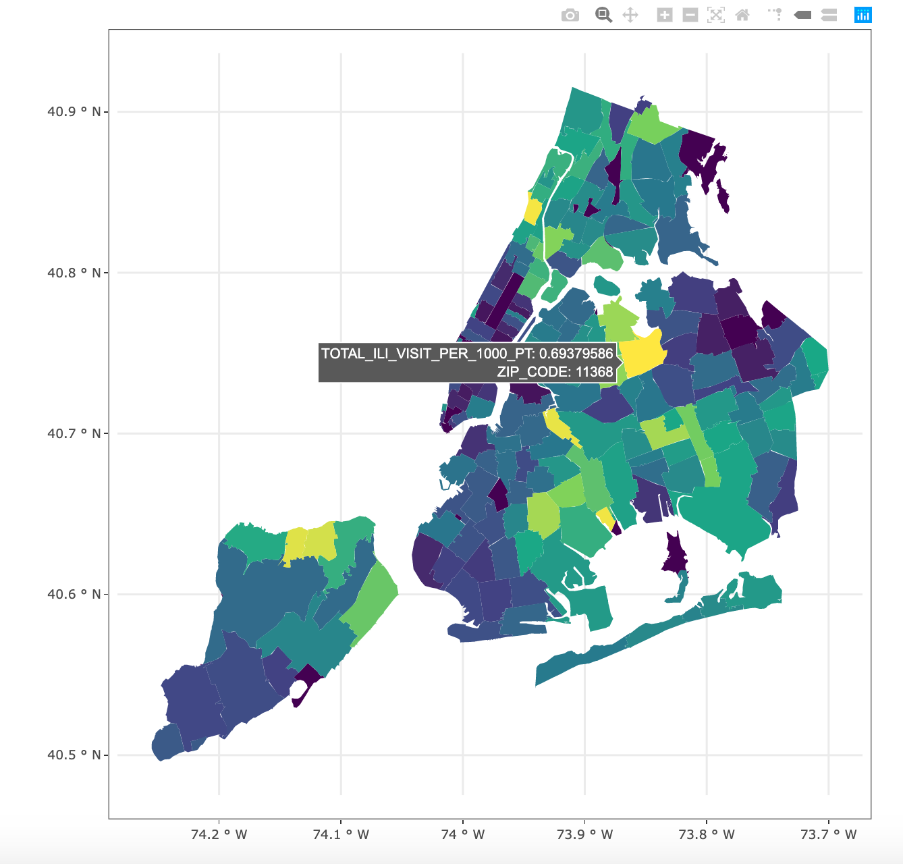
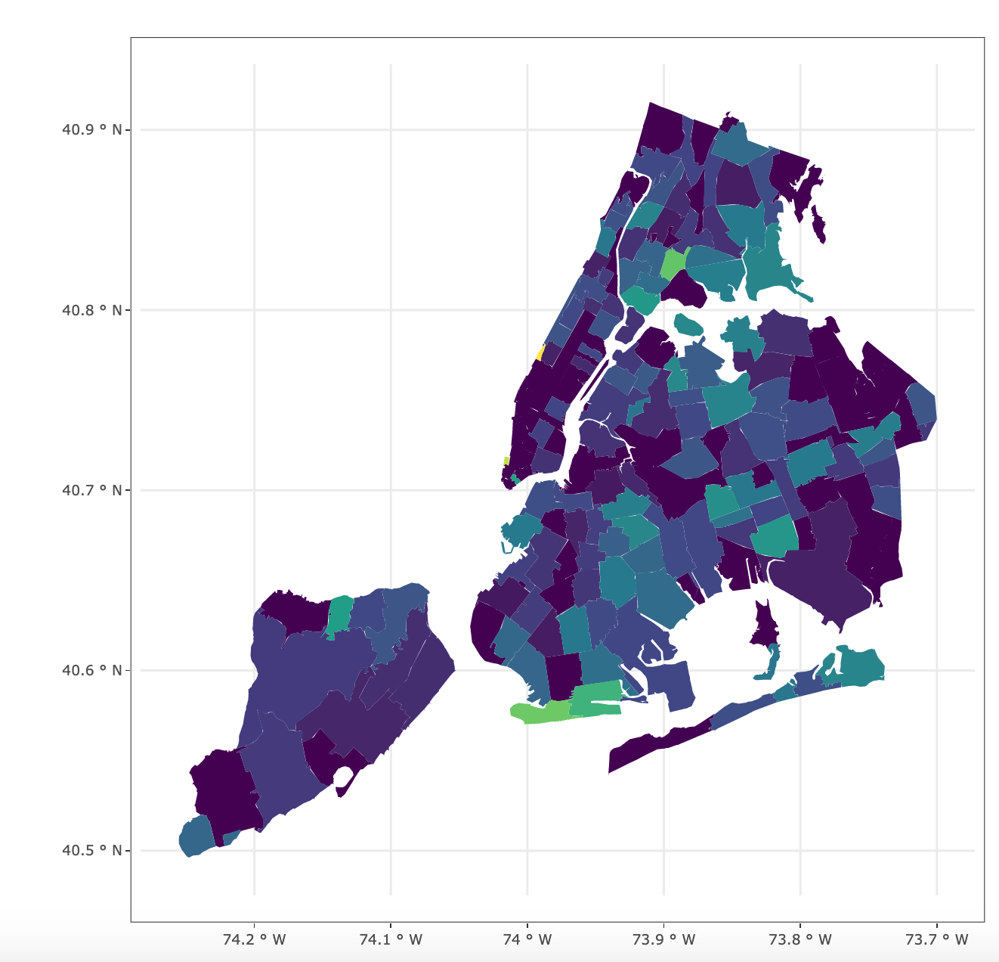

[🚧 Under Construction 🚧]
Total emergency department visits, and visits and admissions for influenza-like and/or pneumonia illness by modified ZIP code tabulation area of patient residence. The dataset includes the following columns:
mod_zcta: modified zip codestotal_ed_visits: count of all emergency department visitsili_pne_visits: count of influenza-like illness and/or pneumonia visitsili_pne_admissions: count of influenza-like illness and/or pnuemonia visits admitted to the hospital

https://github.com/hnguyen1174/shiny_contest_2021.git on the command line.shiny_contest_2021library(shiny) and then shiny::runApp().https://www.shinyapps.io/.